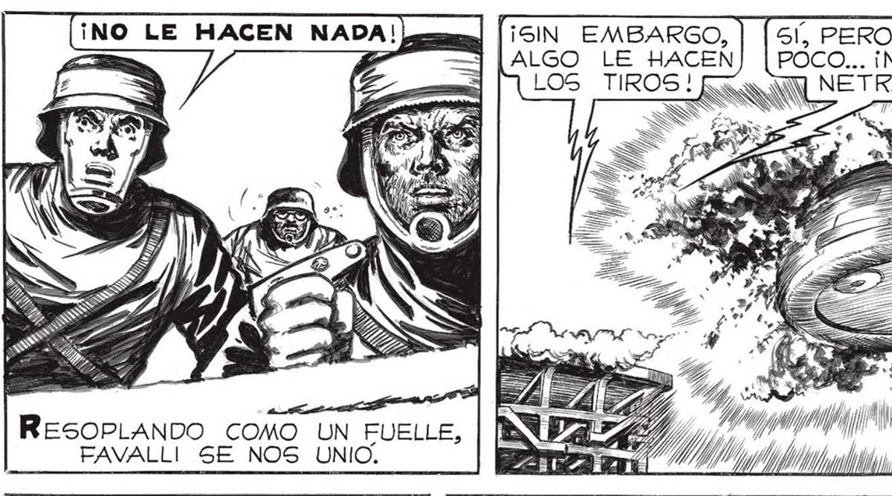
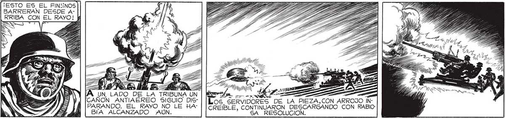

¡SIN EMBARGO, | | 51, PERO ES MUY ¡CUIDADO! ¡ MIRENLE NN NT ALGO LE HACEN POCO... ¡NO LO PE- AHI AL COSTADO: NS LOS TIROS! NETRAN! , F, SS ¿30044 7 ÚS SS OQ As IIBLP e CA 114 ¡NO LE HACEN NADA! Lear] | EN FG, Y %, de LEN Am) DIR mm INN NN S => 4, o AN A PMA EN | PO gan yn O yal e / ResoPLANDO COMO UN FUELLE, FAVALLI SE NOS UNIO, ¿NN ALE TT Y [ni AN A , A E pi AP Eg PERO UN PANTALLAZO DEL MORTIFERO RAYO ABATIO A AQUELLOS BRAVOS. | Ñ AÑ ¡ESTO ES EL FIN!INOS BARRERAN DESDE ARRIBA CON EL RAYO! p Gm 20008 NAS e Los SERVIDORES DE LA PIEZA,CON ARROJO INCREIBLE, CONTINUARON DESCARGANDO CON RABIO: SA RESOLUCION. == y LE : E UN LADO D , CAÑON ANTIAÉREO SIGUIO DIS" PARANDO. EL RAYO NO LE HA" BA ALCANZADO AÚN.

